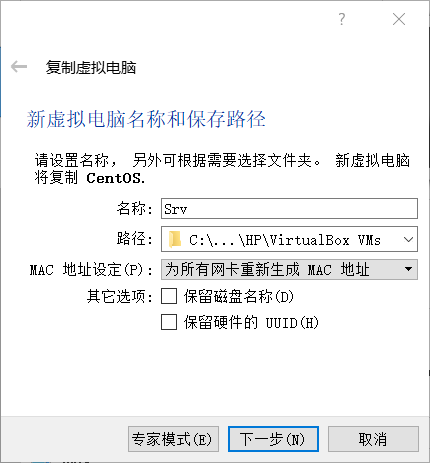
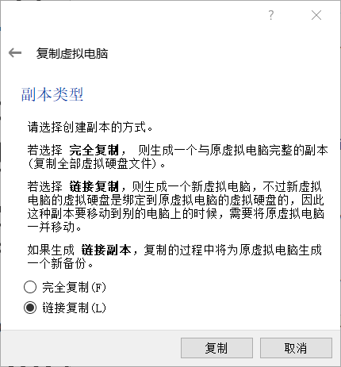
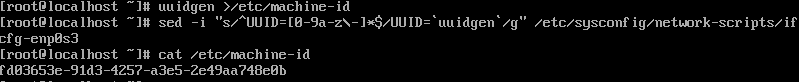
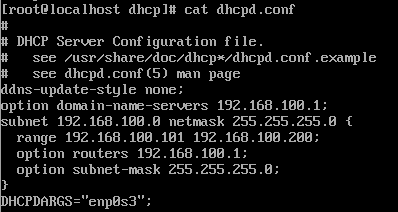
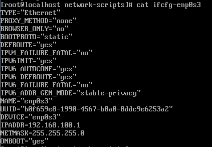
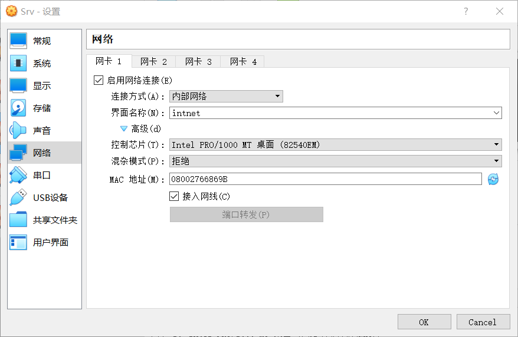
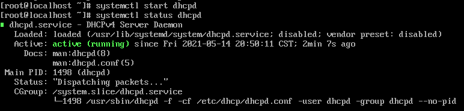
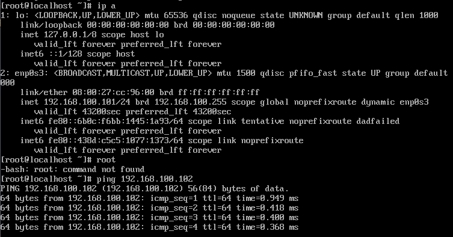
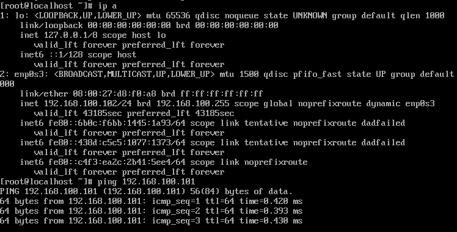

DHCP的配置与管理
DHCP的配置与管理
一、基础知识
什么是DHCP
– 全称：Dynamic Host Configuration Protocol ，动态主机配置协议
– 是一个局域网的网络协议，使用UDP协议工作
– 中、大型网络中手动分配IP地址的方法不合适 ，DHCP可高效分配IP地址
DHCP的主要功能
–为内部网络自动分配IP地址
– 中央管理所有计算机的手段
DHCP服务优点
– 集中验证IP地址等参数，不必检查每个主机
– 不会分配相同IP给不同主机
– 约束特定计算机使用特定IP
– 为DHCP作用域设置各种选项
– 子网间移动主机不需重设IP
DHCP服务缺点
– 不能发现非DHCP客户机IP
– 多DHCP服务器难联动分配
– DHCP服务器不能跨路由器与客户机通信，除非路由器允许BOOTP转发
常用术语
– DHCP服务器：提供DHCP服务的计算机
– DHCP客户端：启用DHCP设置的计算机
– 作用域：完整连续的可用IP地址范围
– 排除范围：作用域内从DHCP服务中排除的有限IP地址序列
– 地址池：定义作用域并应用排除范围后剩余的地址
– 租约：客户机可使用动态分配IP地址的时间
客户机发出租约后：此租约被看作是活动的
租约终止前：客户机可向DHCP服务器请求更新租约
租约到期或被删后：此租约变为不活动的
– 预约：客户机指定永久租约
DCHP的工作流程
– 发现阶段：客户机寻找服务器
– 提供阶段：服务器提供IP地址
– 选择阶段：客户机选择某台服务器提供的IP地址
– 确认阶段：服务器确认所提供的IP地址
– 重新登录
- 客户机重新登录网络时，不需再发送DHCPdiscover发现信息
- 直接发送包含前一次所分配的IP地址的DHCPrequest请求信息
– 更新租约
- 出租IP有租借期限，期满后便收回
- 如要延长租约，则须更新租约
DHCP分配地址的方法
– 自动分配
- 服务器为客户机指定永久IP地址
- 第一次成功租到IP地址后就可永久使用
– 动态分配
- 服务器为客户机指定具时间限制的IP地址
- 到期或明确放弃该地址时可被其他客户机使用
– 手工分配：客户机IP地址由网管指定
二、项目实施
准备 3 台机器
– 安装好 1 台CentOS虚拟机
– 使用链接复制的方式复制3台
- 命名分别为 Srv、CliCent1和CliCent2
- 分别用作DHCP服务器、测试用客户端1和测试用客户端2


– 修改3台虚拟机的主机名
1
hostnamectl set-hostname [MYHOSTNAME]
– 修改 3 台虚拟机的唯一编号
/etc/machine-id
1
uuidgen >/etc/machine-id
/etc/sysconfig/network-scripts/ifcfg-enp0s3
1
sed -i "s/^UUID=[0-9a-z\-]*$/UUID=`uuidgen`/g" /etc/sysconfig/network-scripts/ifcfg-enp0s3
uuidgen命令可产生唯一标识UUID

安装DHCP
– yum安装命令
1
yum -y install dhcp
– 安装完后会生成主配置文件：/etc/dhcp/dhcpd.conf
– 确保客户机上安装有DHCP客户端程序 dhcp-clien
配置DHCP
– Srv主配置文件
1
2
3
4
5
6
7
8
9
10
11ddns-update-style none;
option domain-name-servers 192.168.100.1;
subnet 192.168.100.0 netmask 255.255.255.0 {
range 192.168.100.101 192.168.100.200;
option routers 192.168.100.1;
option subnet-mask 255.255.255.0;
}
DHCPDARGS="enp0s3";
#服务器IP是192.168.100.1
#分本的地址是该网段的 192.168.100.101~192.168.100.200
#绑定在 enp0s3网卡上
– 修改Srv的网络配置文件
1
2
3BOOTPROTO=static # 将IP地址设为静态
IPADDR=192.168.100.1
NETMASK=255.255.255.0
– 客户机CliCent1和CliCent2 维持原状
– 改虚拟机的网络为内部网络并刷新网卡物理地址

启动服务器
– 在Srv上启动DHCP服务器
1
systemctl start dhcp

– 重启客户机CliCent1和CliCent2
- 查看其IP地址
- 相互Ping检查是否相通

